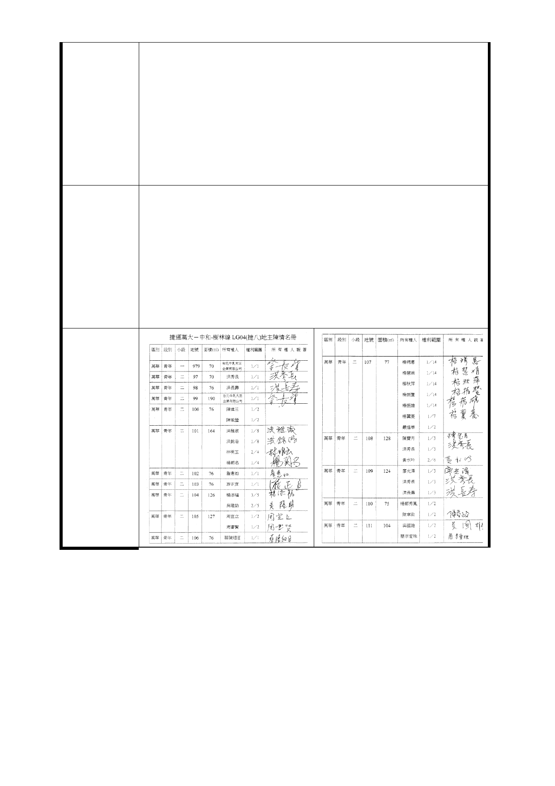

政府站及公館站等，因位居交通轉程中樞或商業觀光聚集要
地，採捷運共構聯合開發方式設站確有其經濟實益；惟其他
多數車站如小南門站、西門站、新莊站、輔仁大學站等處，
僅需設有車站本體、相關設施及利用人行道或小空間設置出
入口，即可發揮疏運旅客之功能。LG04 車站所處地區，既非
位於交通要衝，亦無觀光景點及商業重地；鄰近之中央市場
，雖為果菜及漁產批發重地，然其係仰賴汽車運輸將產品運
入批出，捷運通車並不會改變其現有營運方式，是以 LG04
車站並無捷運共構聯合開發之必要及實益。
七、我們不反對蓋捷運，在地鄉親殷盼捷運萬大線近 10 年，
卻盼到一條草率無章、捨簡從繁、不顧成本、忽視眾意、侵
害民眾、令人匪夷所思的捷運計畫。我們全體居民一致抗議
反對，並強烈要求將 LG04 車站變更設至台北市萬大路與長泰
建 議 辦 法 街口：萬大國小對面空地、路橋周邊空地、光仁國小周邊空
地、天主教周邊空地、眷村周邊空地、紅磚道空地、轉角空
地，把對人民的侵害減到最少！
八、檢附連署書及照片如附件，請政府重視民意依法處理，
以維法紀及公眾權益。
- 135 -